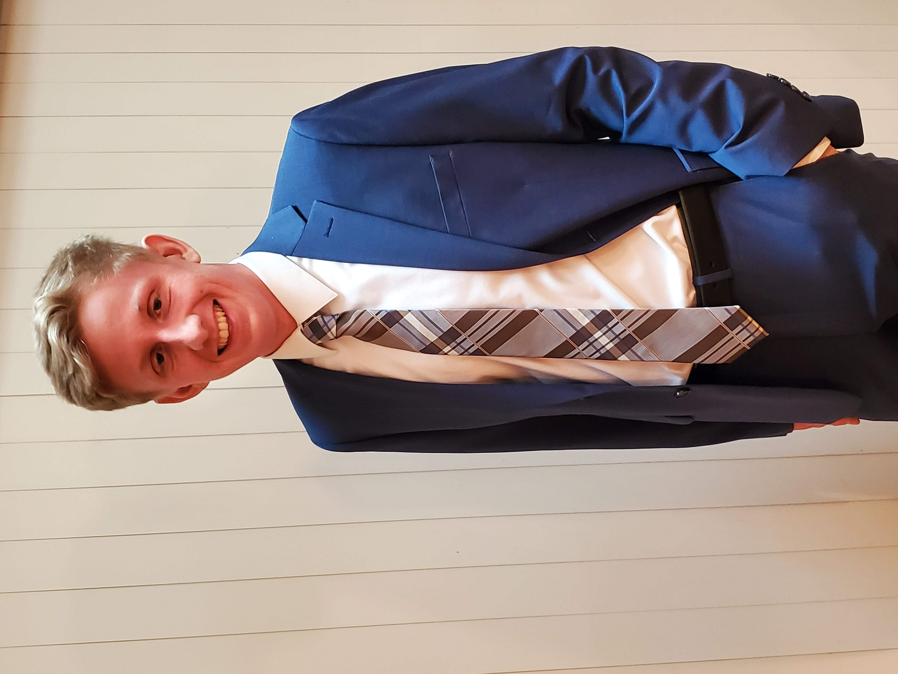

Copyright © 2021 Michael McGilvray Personal Website
mikeymcgilvray@gmail.com
18 Hale Road, Stow, MA
972-837-0307

Hello, my name's Michael. I'm a computer science student.

I am a senior studying computer science at the University of Massachusetts Lowell interested in software development. I’ve been fascinated with computer science ever since my freshman year of high school where I found that I enjoy creating things using computers. Through my time at UML, I’ve strengthened my knowledge regarding core computer science concepts with a strong understanding of low-level programming.University of Massachusetts Lowell, Lowell, MA
Anticipated May 2022
Candidate for a Bachelor of Science in Computer Science
GPA 3.99
| Languages | Tools |
|---|---|
| C++ | Git |
| C | Visual Studio |
| Python | Photoshop |
| JavaScript | Illustrator |
VS Code Time Management Extension
October 2020 – December 2020
Evil Hangman January
2019 – May 2019
Honey Pot Hill Orchards, Stow, MA
July 2017 – December 2020
Senior Sales Associate
University of Massachusetts Lowell, Lowell, MA
May 2021 – August 2021
Instructional Technologies Intern
Copyright © 2021 Michael McGilvray Personal Website
mikeymcgilvray@gmail.com
18 Hale Road, Stow, MA
972-837-0307